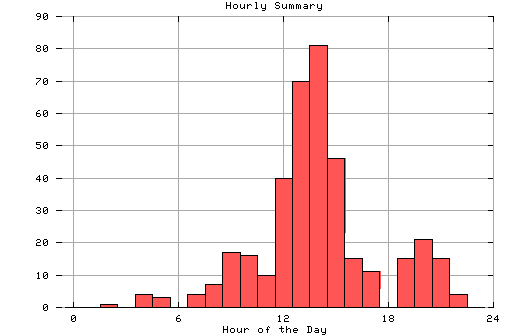

HTTP Server Hourly Summary
Covers: 08/07/95 to 10/14/95 (69 days).
All dates are in local time.
midnite: 0 : 1:00 am: 0 : 2:00 am: 1 : 3:00 am: 0 : 4:00 am: 4 : 5:00 am: 3 : 6:00 am: 0 : 7:00 am: 4 : 8:00 am: 7 : 9:00 am: 17 : # 10:00 am: 16 : # 11:00 am: 10 : # noon: 40 : ## 1:00 pm: 70 : #### 2:00 pm: 81 : #### 3:00 pm: 46 : ## 4:00 pm: 15 : # 5:00 pm: 11 : # 6:00 pm: 0 : 7:00 pm: 15 : # 8:00 pm: 21 : # 9:00 pm: 15 : # 10:00 pm: 4 : 11:00 pm: 0 :

Statistics generated at Mon Oct 16 10:19:58 MET 1995, (C) Oslonett AS, 1995.